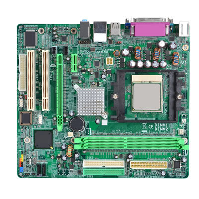

SCHEDA MADRE
La scheda madre o scheda di sistema,anche conosciuta con i termini inglesi motherboard ("scheda madre") o mainboard ("scheda principale"),e' una parte fondamentale di un moderno personal computer: sotto forma di scheda elettronica principale raccoglie in se' tutta la circuiteria elettronica e i collegamenti di interfaccia tra i vari componenti interni principali del PC, comprendendo quindi anche i bus di espansione e le interfacce verso le periferiche esterne. e' esponsabile dunque della trasmissione e temporizzazione corretta di molte centinaia di segnali diversi, tutti ad alta frequenza e sensibili ai disturbi, tra processore e periferiche interne e viceversa. La sua buona realizzazione e' quindi un fattore chiave per le prestazioni e l'affidabilita' dell'intero computer.
Questa immagine rappresenta una scheda madre con i suoi vari componenti
un circuito stampato complesso, ricavato da un molti strati di vetronite e rame: Una scheda madre puo' avere da quattro a sei strati di rame. In questi sono ricavate le piste che collegano i componenti, che devono essere calcolate con molta cura: alle frequenze normalmente adoperate dalle CPU e dalle memorie RAM in uso oggi, infatti, la trasmissione dei segnali elettrici non si puo' piu' considerare istantanea ma deve tenere conto dell'impedenza propria della pista di rame e delle impedenze di ingresso e di uscita dei componenti connessi, che influenzano il tempo di volo dei segnali da un punto all'altro del circuito.Su questo circuito stampato vengono saldati una serie di circuiti integrati, di zoccoli e di connettori; gli integrati piu' importanti sono il chipset che svolge la gran parte del lavoro di interfaccia fra i componenti principali e i bus di espansione, la ROM (o PROM, EEPROM o simile), il Socket per il processore e i connettori necessari per il montaggio degli altri componenti del PC e della espansione. La struttura attuale delle schede di sistema dei computer e' il frutto di un'evoluzione tecnologica che ha portato a definire una architettura di sistema valida, in linea di massima, per tutti i sistemi di classe personal computer o di potenza paragonabile.